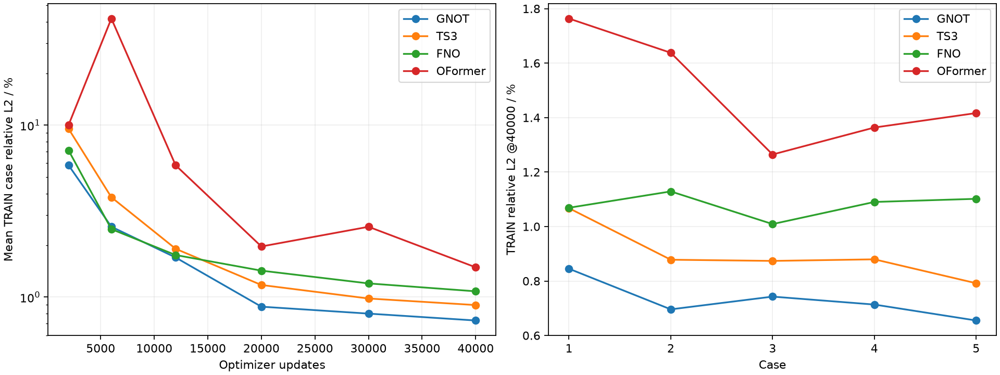
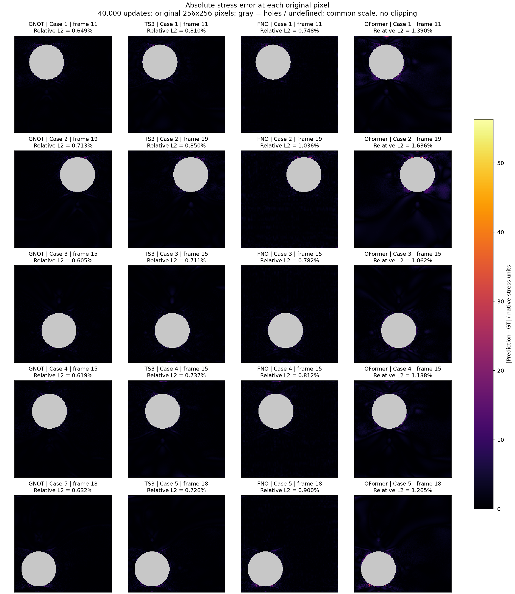
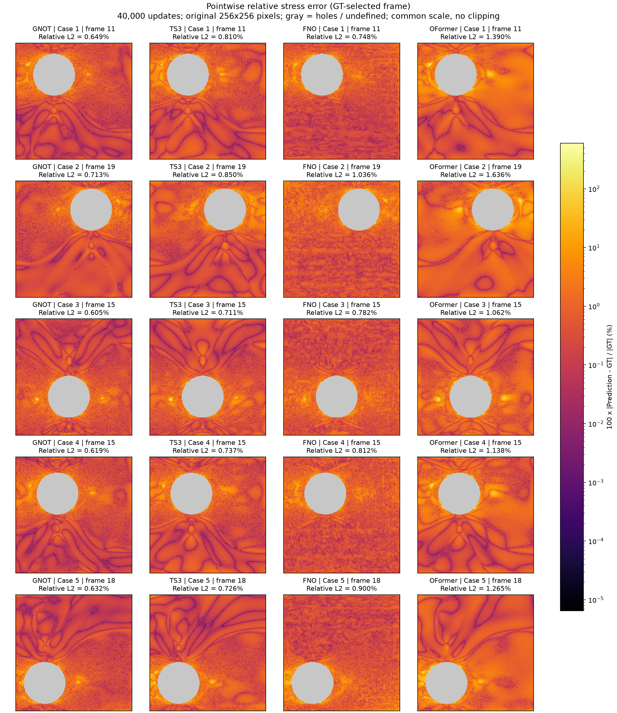
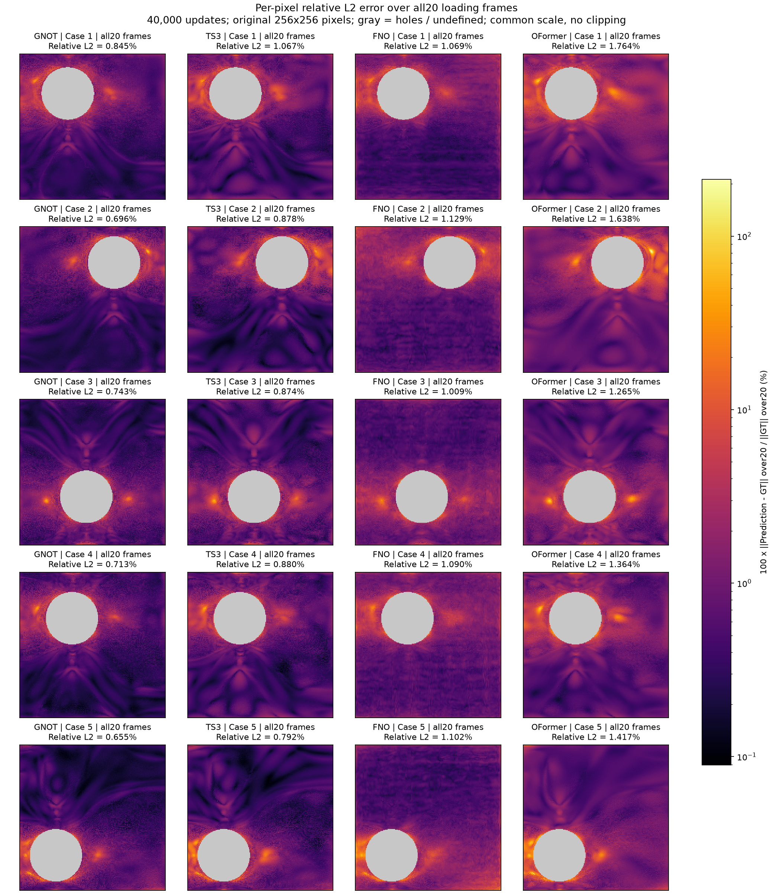
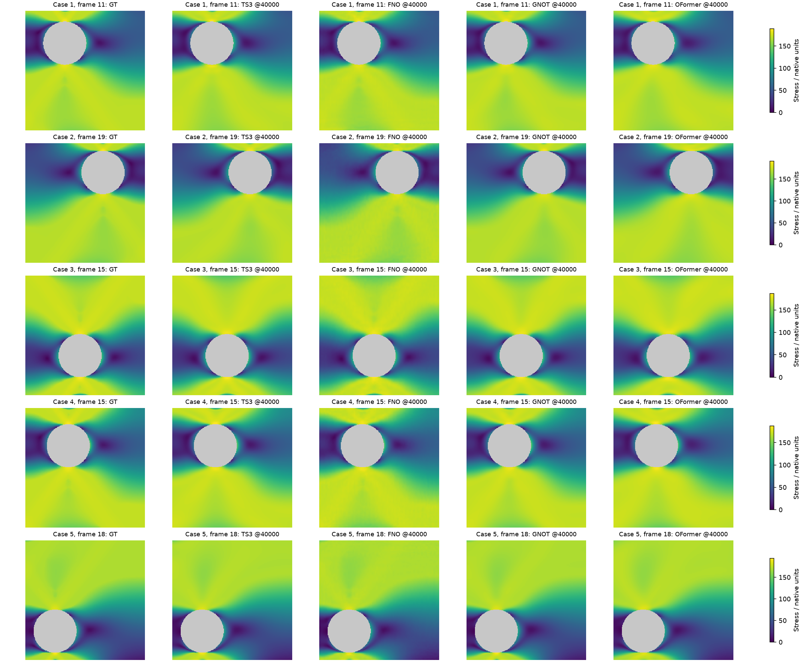

P02 / FOUR NEURAL OPERATORS
板件 · 四模型初步训练
40,000步已完成TS3、FNO、GNOT、OFormer，从头拟合5个样本；保留20,000步结果，再从完整检查点续训至40,000步。
同预算误差对比
指标为每个case全部20帧、全部材料像素的相对L2，再对5个case等权平均。点击任意表头排序；“—”表示无该步评估。
| 模型 | 参数量 | 参数比/TS3 | 2000步 (%) | 6000步 (%) | 12000步 (%) | 20000步 (%) | 30000步 (%) | 40000步 (%) |
|---|---|---|---|---|---|---|---|---|
| GNOT | 980,964 | 1.0043 | 5.8506 | 2.5647 | 1.6979 | 0.8789 | 0.8009 | 0.7304 |
| TS3 | 976,756 | 1.0000 | 9.5321 | 3.8064 | 1.9081 | 1.1752 | 0.9806 | 0.8981 |
| FNO | 1,023,833 | 1.0482 | 7.1396 | 2.4829 | 1.7552 | 1.4240 | 1.2001 | 1.0798 |
| OFormer | 989,740 | 1.0133 | 9.9994 | 41.6723 | 5.8361 | 1.9685 | 2.5623 | 1.4893 |

参数量约0.98–1.02M；同样本、同更新数，但计算量和耗时不相等。FNO使用二维规则网格频谱卷积，其他模型使用原始格点序列。
GT / Prediction / 逐点误差
正在读取原始数据…
Prediction
Absolute error
Relative error (%)
每个方格对应原始256×256数组中的一个值；无插值、无平滑。孔洞为灰色。GT与Prediction使用同一色标。移动指针或点击图像可查看同一像素的数值。应力单位及物理坐标单位未提供，页面保留原文件数值。
选择图上一个像素查看数值。
绝对误差=|PRED−GT|；相对误差=100×|PRED−GT|/|GT|。GT为0时相对误差未定义，显示灰色。误差图用各自完整线性色标，不截断离群值；标题Relative L2（%）=100×‖PRED−GT‖₂/‖GT‖₂，仅统计材料像素；等价于RMSE除以GT的RMS，不是逐点相对误差的平均。
静态误差图
四模型使用共同色标，子图标注Relative L2（%）；相对误差静态图使用对数色标。每个case选择GT能量最高的一帧，所有模型一致。
绝对应力误差
打开完整图片
逐点相对误差
打开完整图片
全部20帧综合相对L2误差
打开完整图片
GT与模型应力预测
打开完整图片
输入、监督与对比边界
输入[1,65536,24]：归一化XY、平面Z=0、geometry、完整20步加载序列；输出[1,65536,20]，监督全部20步应力。材料像素归一化MSE，孔洞权重为0。每次更新一个完整case，5个case循环；40,000步即每case 8,000次展示。
AdamW、FP32/TF32；初始学习率3×10⁻⁴，6000后10⁻⁴，12000后3×10⁻⁵；20,000→40,000保持3×10⁻⁵并接续优化器/RNG。只有数据映射接口适配本组二维数据，不是原rod任务直接排名。
本页是训练集拟合：全部加载历史已作为输入，不能解释为只知道当前载荷的因果预测；没有独立测试集，也不能由5个样本推出泛化结论。5个样本平均低于1%不代表每个像素误差低于1%。
完整配置、参数、逐case指标及数据SHA